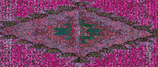

I'M GOING TO hallucinate FROM THE HEAT before I ever get to try peyote. But it's when I look up to the sky, to conjure a little more self-pity by seeing the desert sun up there all awful and irksome, that I have that peculiar sensation, right out of the horror movie routine: I'm being watched. Hello.
"Excellent," Ali says. "You have indeed been called, Sunshine. Now find the cutting stone."
"I brought my jackknife." He frowns in a way that has become too familiar: when I go on about LSD, want to whine a little about how new and scarey it seems, call the sacred cactus peyote. "Okay . . . what is it this time, Ali?"
"This is not a what-is-it-this-time, Sunshine. This is life and death." Ali spins in place and raises his arms, giving a big apology to all the desert for my indiscretion, making me shrink right there in my spot 'til I'm as tall as the jikuli that found me.
"It is imperative not to introduce foreign elements to this desert like your metallic blade; to do so would be to upset the earth's immune system--and invoke great disfavor." A little petulant, I, at this point, wondering whether Ali intends to introduce a new clause ever time it looks like I'm about to taste the fruit of psychedelia. It's been six weeks since my last acid trip! I ask him to tell me about THE cutting stone. Is there more than one out there? "Many millions, indeed, but only one that will find you first."
I find one right away the size of a tomahawk head. A little thicker than might be used for chopping a tree, but it does taper nicely at one edge in a knife-like way. "How's this, Ali?" I hold it up hopefully.
He approaches me expressionlessly and takes the stone in his hand, then looks up at me as if I were crazy. "Would a surgeon use this to operate on a patient?" I know my Cheshire grin well enough, but I can't seem to wipe it off my face even when I'm aware it's there. "How would the earth like you trying to rip it open with this blunt hunk of rock?"
"I'm sorry Ali. I'm tired. You never said HOW sharp."
"Let it be sharp enough so that you would use it to draw your own blood." GULP. That gets me thinking. And I bet it's on purpose that he leaves me wondering whether I will have to use it to do just that. There's one thing I can say about his need-to-know mode of operating: certainly has kept me on my toes. "The cactus makes an imprint when it beholds your face the first time, this is acceptance, of a sort, although it doesn't end there: you have to ask to receive its meaning, apologize for severing its life, water it wishing it well."